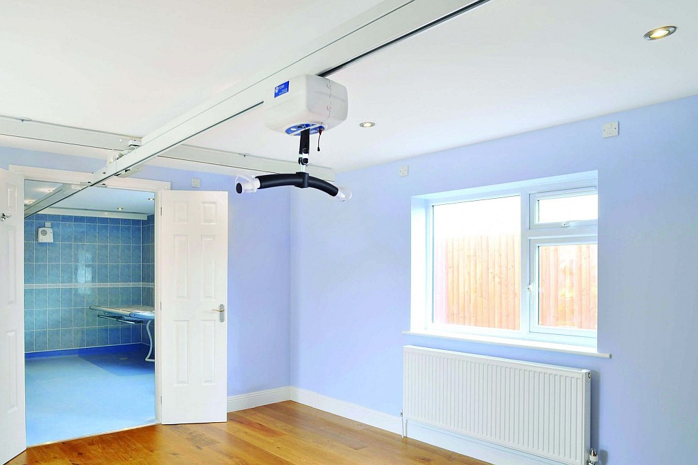
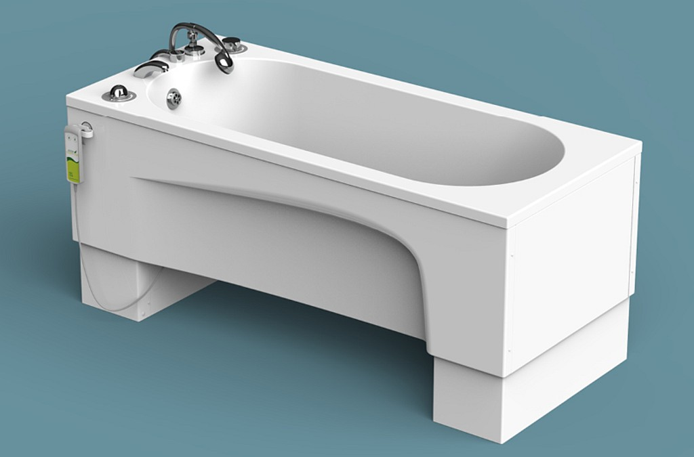

I live with my family in a lovely home in Chester, England. As I’ve grown older,
and needed more and more help, the house has become too small for me. Soon I
will need two carers with me, round the clock. I need more space for my
supplies, my equipment and my carers. And it’s important to keep my family
together.
Why a new home?
It’s important for me to be near my parents and especially my brother (what can
I say - he needs me!). They know me best and what I need. So I have to have my
family around me. But I also need my carers.
And I’ve never been able to have friends round to my house. There just isn’t
enough room for all the wheelchairs! It would be amazing to have space for them
to visit and perhaps watch a film or enjoy some music therapy together.

Home is the best place for me where I have everything I need. It’s like having a
hospital in my home. And for a hospital, you need a lot of space. Space for
my two wheelchairs
, all my supplies, my special
bed and
bath , my hoists - everything.
The bath has always been one of my happiest places. I have a very special bath,
which goes up and down for my carers. It cost £11,000 (!) and has a spa function
which I love. Fortunately the bath can move with me, though there will be a
relocation fee.

Privacy
Though we all want to live together, it can be difficult for the rest of my
family, when there are carers in the home all day and all night. It makes it
hard to have a private family life. Sometimes I’m noisy at night and wake
everyone up. My mum is basically a superhero .
But even superheroes need to sleep.